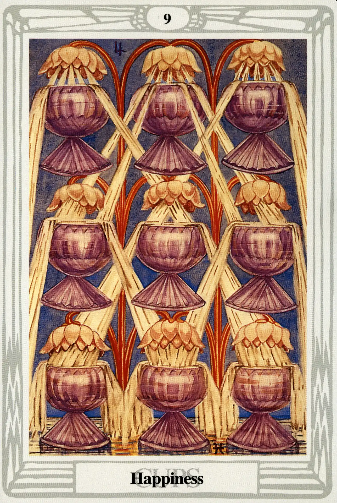

Cups
Nine of Cups
Happiness

(Jupiter in Pisces)
10° to 20° Pisces
March 1 to March 10
Original Title: Lord of Material Happiness.
Golden Dawn Model: A hand appears from clouds at the bottom of the card holding the stem of lotuses or water lilies, one flower of which overhangs each of nine cups arranged in three rows of three.
Queen Scale for Yesod: Violet.
The Four Scales for Jupiter: Violet; blue; rich Purple; Bright Blue, rayed Yellow.
The Four Sales for Pisces: Crimson (ultra Violet); Buff, flecked silver White; Light Translucent pinkish Brown; Stone color.
Formula: 9 (Yesod) of Cups (Briah) +Jupiter in Pisces = HAPPINESS
Is everybody happy? Yes!
See what happens when we return to the stability of the middle pillar? This is one of the best cards in the deck. Pisces, being the mutable sign of water, tends to stabilize the element. She is most welcome in Yesod, the sphere of the watery Moon. Yesod is also the Foundation, the sephira that stabilizes the entire Tree of Life. This provides a most cozy and satisfying environment for loveable Jupiter to happily enjoy the good life as only Jupiter and his friends can.
Jupiter also has an affinity to water. Chesed, the sphere of Jupiter, Crowley affirms, “represents Water in its highest material manifestation.”
Everybody is, literally, happy!
Harris follows the color scales and pumps up the Golden Dawn model by straightening her streams of flowing water as if they were spurting from the lotus flowers and gushing under pressure into large-bowled cups. The whole image is one of voluptuous, surreal Victorian clutter. There is hardly room for her to include the symbols of Jupiter and Pisces at the top and bottom of the card.